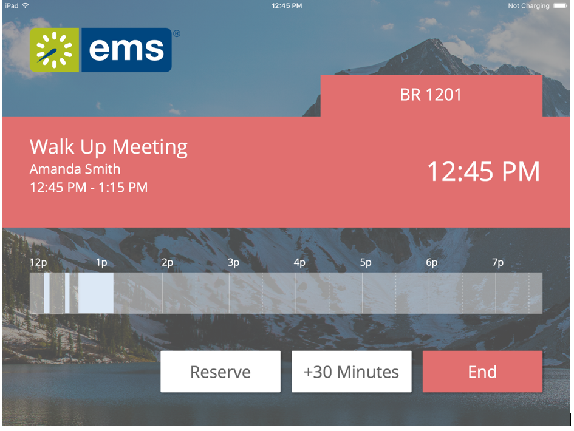

IMPORTANT: The user experience for editing bookings has been improved with Version 44.1, Update 12. Users can now extend their bookings with only one click. Admins should change the Extend Booking Button Label parameter to be "Mins" or "Minutes."
You can set how information displays at the Global level (the default for all Profiles) or for just one Profile
|
Option |
Description |
|---|---|
|
Allow Edit Booking |
Indicates if a meeting can be adjusted or ended. If set to Yes, then the End button will display while a meeting is in progress. The meeting can also be extended based on the value of the parameter described below. End—Sets the booking end time to the current time. |
|
Number of Minutes to Extend Booking |
Determines how much the meeting can be extended if the room is available. The options are 15, 30, 45, and 60 minutes. If the user presses this button, the meeting end time will be extended by the value shown. |
NOTE: Currently, the EMS Room Sign App only supports editing meetings without setup or teardown time.
In Progress Screen with Reserve, One-Click Meeting Extend, and End Buttons
